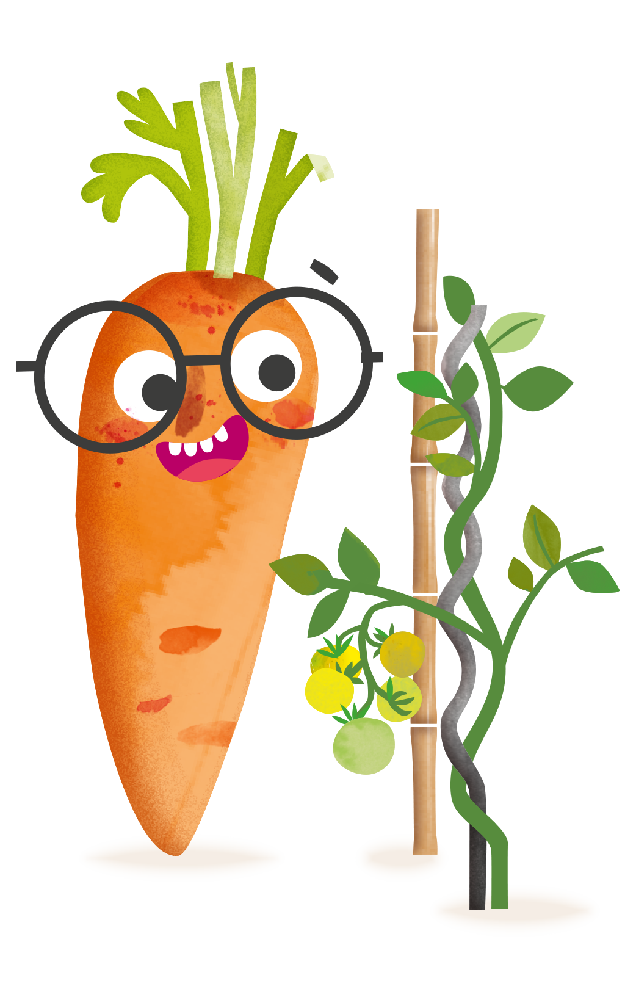
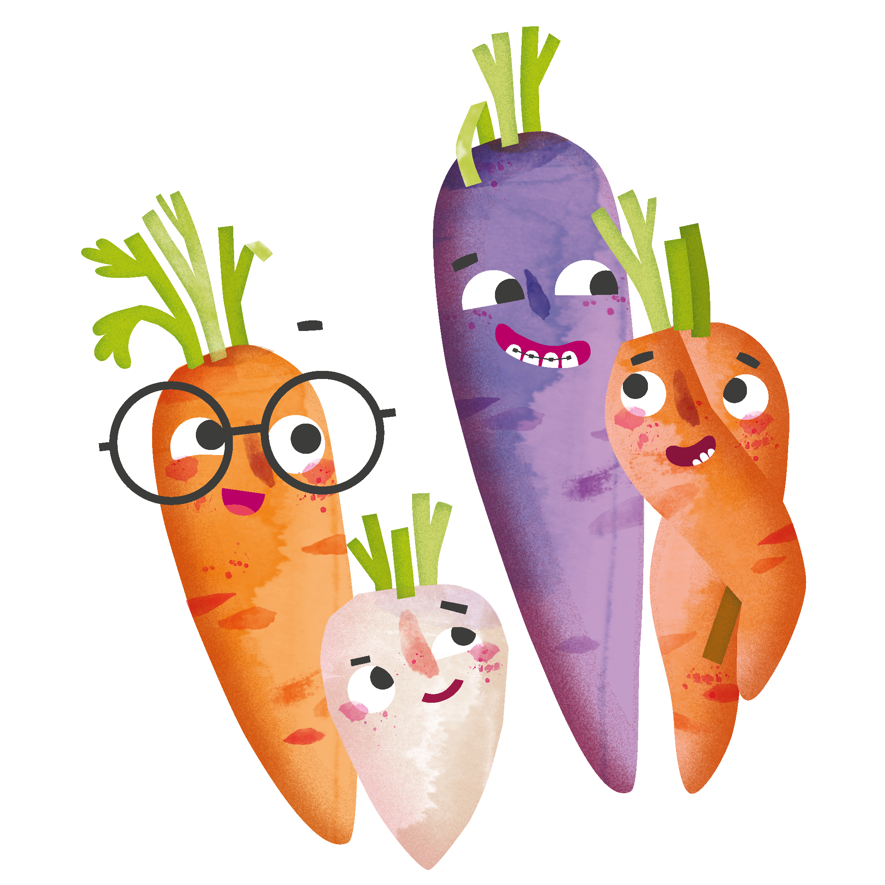

Das sind wir
Auf dieser Seite können alle sehen, was wir mögen, was uns ausmacht und welche Ideen wir haben.
Musik
[Eure Lieblingslieder oder Künstler*innen]
Lieblingsfarbe
[Eure Lieblingsfarben]
Superkraft
[Was ist eure (geheime) Superkraft?]
Traum für später
[Was möchtet ihr einmal ausprobieren oder lernen?]

Mit Maxi macht's mehr Spass
Acker steht für Natur, Lernen und Ausprobieren. Genau das passt auch zu meiner ersten Webseite.
Unsere Lebensweisheit(en)
[Lasst hier eurer Kreativität freien Lauf...]

Eure Mission
- Setzt in den eckigen Klammern eigene Texte ein und macht die Seite zu eurer ganz eigenen Version.
- Ändert Farben, Texte und Überschriften.
- Tauscht ein Maxi-Bild gegen ein anderes Bild aus dem "images"-Ordner.
- Fügt eine neue Karte bei "Das bin ich" hinzu.
- Bonus: Fügt einen Button in die Webseite ein.